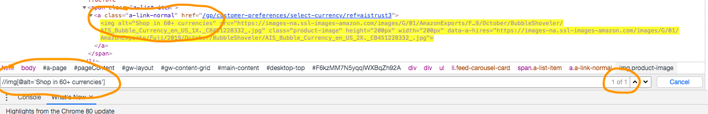
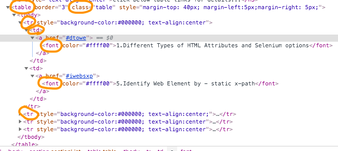

Different Types of HTML Elements and Selenium Options
1. All different types of HTML Elements are shown in below image.
2. In Selenium we can use below options to find Web Elements.
3. How to check web element properties?
# Open Google Chrome.
# Launch any website , https://www.google.com
# Press F12 to inspect the web Elements.
# Click the arrow as highlighted and inspect the element as shown Google logo
here
Unique Web Element identification?
While identifying web element if id/name/class/cssSelect/xpath returns one object element
then only we
can use that element in our selenium test scripts.
If name/class/id value is same for more than one web element present in a web page
then we can't directly use
those web attributes to identify the object.
As per the screenshot we can write below informations.
We are trying to identify uniquely two images.
For both the img , class value is same - 'product-image' , which is not unique.
Now question is how to check there is more than one web element having same
class/id/name value?
Open a Web Page --> Press F12 --> Click on any place on inspect area --> Press
ctr+F --> You can search your
id/class/name value here. Check below image where 'product-image' returns 8 web element.
So we can't use directly class value 'product-image' to identify web element
uniquely. As there are
8 web element having same class value.
If we avoid class value then we have to search for another web attributes for those
web element which are unique.
For first 'img' alt value is 'Shop in 8 different languages'.
For second 'img' alt value is 'Shop in 60+ currencies'.
Below image returns 1 of 1 while searching this 'alt' values.

So we can use 'alt' value to uniquely identify these images. In selenium there is
no direct web
element identification facility of 'alt'like we have it for name,id,class value.
So we can use these 'alt' values in X-path , X-path details are well explained
below. Here just showing
how to wtire two X-path using these 'alt' values which returns unique value. Means 1 of
1.
//img[@alt='shop in 8 different languages'] This is for the first
image.
//img[@alt='Shop in 60+ currencies'] This is for the second image.
Which returns
1 of 1 as shown in below images.

Same concept is applicable for id,name,class and other attributes. If
attributes value are not unique then we have to go for either X-Path or cssSelect
option. details
of X-Path and cssSelect are given below.
Identify Web Element by : id
1. If a Web element has id then then object can be written as-
WebElement element = driver.findElement(By.id("gsc-i-id1"));
Where id value is "gsc-i-id1"

Identify Web Element by : name
1. If a Web element has name then object can be written as-
WebElement element = driver.findElement(By.name("search"));
Where name value is "search"
Identify Web Element by : class
1. If a Web element has name then then object can be written as-
WebElement element = driver.findElement(By.class("logo logo-large"));
Where class value is "logo logo-large"
Identify Web Element by : static X-Path
1. Static X-Path creation by pattern one==>
//AA[@BB='value of BB']
AA = HTML Web Element type [Example: link , image , button]
BB = Attribute of HTML Web Element [Example: name , id , value , src , value]
value of BB = value of respective Attributes value
Web Element From DOM is given below
<input autocomplete="off" type="text" size="10"
class="gsc-input"
name="search" title="search"
id="gsc-i-id1" style="width: 100%; padding:
0px; border: none; margin: -0.0625em 0px 0px; height: 1.25em; outline: none;"
dir="ltr"
spellcheck="false">
As per above image for any web element properties AA count is 1 , but BB count can be
more than one. So we can write
AA = input
BB = name , value of name = search
BB = id , value of id = gsc-i-id1
BB = class , value of class = gsc-input
BB = title , value of title = search
So we can create below X-Path using above pattern and element properties...
//input[@name='search']
//input[@id='gsc-i-id1']
//input[@class='gsc-input']
//input[@title='search']
2. Static X-Path creation by pattern Two==>
//AA[contains(@BB,'partial value of BB')]
Web Element From DOM is given below
<img class="search-icon"
src="/images/search.png”>
As per above image and Web element properties we can write ..
AA = img
BB = class , partial value of class = 'search' or 'icon' or 'search-' or '-icon'
BB = src , value of src = '/images' or 'search.png' or like this we can create
So we can create below X-Path using above pattern and element properties...
//img[contains(@class,'search')]
//img[contains(@class,'icon')]
//img[contains(@src,'/images')]
//img[contains(@src,'search.png')]
3. Static X-Path creation by pattern Three==>
//AA[text()='Any text']
This type of Xpath is applicable for any Text / LinkText present in Web Page.
Web Element From DOM is given below
<h2>Platinum Level Sponsors</h>
As per above text and Web element properties we can write ..
AA = h2
text = Platinum Level Sponsors
So we can create below X-Path using above pattern and element properties...
//h2[text()='Platinum Level Sponsors']
4. Static X-Path creation by pattern Four==>
//AA[contains(.,'partial text')]
This type of Xpath is applicable for any partial Text / LinkText present in Web Page.
Web Element From DOM is given below
<h2>Platinum Level Sponsors</h>
As per above text and Web element properties we can write ..
AA = h2
Partial text = Platinum Level or Level Sponsors or Platinum or Level or Sponsors
So we can create below X-Path using above pattern and element properties...
//h2[contains(.,'Platinum Level')]
//h2[contains(.,'Platinum')]
//h2[contains(.,'Level')]
//h2[contains(.,'Sponsors')]
5. How To Use "AND" Operator In X-Path?
//AA[@BB='value of BB' and @CC='value of CC'] .....This type of X-path is useful when we concat two Attributes value of a Web Element.
AA = HTML Web Element type [Example: link , image , button]
BB/CC = Attribute of HTML Web Element [Example: name , id , value , src , value]
value of BB/CC = value of respective Attributes value
Web Element From DOM is given below
<input autocomplete="off" type="text" size="10"
class="gsc-input"
name="search" title="search"
id="gsc-i-id1" style="width: 100%; padding:
0px; border: none; margin: -0.0625em 0px 0px; height: 1.25em; outline: none;"
dir="ltr"
spellcheck="false">
We can write create below table
AA = input
BB = name , value of name = search
CC = id , value of id = gsc-i-id1
BB = class , value of class = gsc-input
CC = title , value of title = search
So we can create below X-Path using above pattern and element properties...
//input[@name='search' and @id='gsc-i-id1']
//input[@class='gsc-input' and @title='search']
6. How To Use "OR" Operator In X-Path?
//AA[@BB='value of BB' OR @CC='value of CC'] .....This type of X-path is useful when we either BB or CC Attribute value of a Web Element.
AA = HTML Web Element type [Example: link , image , button]
BB/CC = Attribute of HTML Web Element [Example: name , id , value , src , value]
value of BB/CC = value of respective Attributes value
Web Element From DOM is given below
<input autocomplete="off" type="text"
size="10" class="gsc-input"
name="search" title="search"
id="gsc-i-id1" style="width: 100%; padding:
0px; border: none; margin: -0.0625em 0px 0px; height: 1.25em; outline: none;"
dir="ltr"
spellcheck="false">
We can write create below table
AA = input
BB = name , value of name = search
CC = id , value of id = gsc-i-id1
BB = class , value of class = gsc-input
CC = title , value of title = search
So we can create below X-Path using above pattern and element properties...
//input[@name='search' or @id='gsc-i-id1']
//input[@class='gsc-input' or @title='search']
Identify Web Element by : dynamic X-Path
Dynamic X- Path Example :1
Dynamic X-Path is useful when object's own Attributes are changing.
Dynamic X-Path is useful when object don't have enough Attribute to Identify.
Dynamic X-Path is useful when object has relationship of parent and Child.

As per above Example if we consider Table as Parent then the tree would be like below.
table-> tbody ->tr -> td ->a -> font
What is xpath of table?
//table[@class='table']
How to navigate to 'tr' of table?
//table[@class='table']/tr[1] is First 'tr'
//table[@class='table']/tr[2] is Second 'tr'
How to navigate to 'td' of table?
//table[@class='table']/tr[1]/td[1] is First 'td' of first 'tr'
//table[@class='table']/tr[1]/td[2] is Second 'td' of first
'tr'
How to navigate to 'font' of table?
//table[@class='table']/tr[1]/td[1]/a/font is 'font' of first
'tr' first 'td'
//table[@class='table']/tr[1]/td[2]/a/font is 'font' of first
'tr' second 'td'